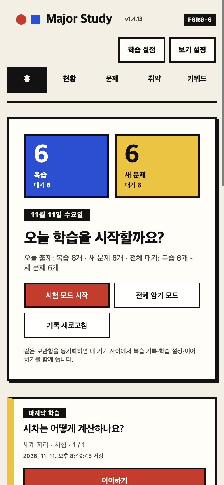

학습현황과 취약 문제
과목별 진도, 최근 평가, 못 암기·애매 문제를 지연 시간까지 반영한 긴급도 순으로 보여 줍니다.
MIA Study는 Obsidian 안에서 과목·질문·키워드를 화면으로 관리하고, FSRS-6 간격 반복으로 복습 시점을 잡아 주는 공부 플러그인입니다. 면접·시험 준비용 전공 질문을 Markdown 그대로 쌓아 두세요.

질문 등록부터 복습, 약점 확인, 정리본 출력까지 Markdown을 직접 쓰지 않고 폼과 버튼으로 진행합니다.
시험 모드는 정답을 가린 채 시작합니다. 정답을 본 뒤 네 단계로 평가하면 다음 복습 시점이 버튼 위에 바로 보입니다.
$…$, $$…$$)을 그대로 렌더링
질문·정답·유형·핵심/보조 키워드를 입력하면 과목 폴더의 문제은행.md에 정리되고, 과목 노트도 자동으로 갱신됩니다.

키워드마다 의미 노트가 생기고, 같은 키워드를 쓰는 질문이 묶입니다. 학습 중에는 관련 문제를 추천받아 이어서 풀 수 있습니다.

과목별 진도, 최근 평가, 못 암기·애매 문제를 지연 시간까지 반영한 긴급도 순으로 보여 줍니다.
하루 새 문제·복습 상한, 학습·재학습 단계, 목표 기억률, 버튼별 고정 간격을 간편·고급 화면에서 조정합니다.
과목의 질문·답변 전체를 A4 서식의 .docx로 출력합니다. 표·목록·코드·보관함 이미지를 포함합니다.
마지막 위치에서 다시 시작합니다. 같은 보관함을 동기화하면 복습 기록·설정·이어하기를 여러 기기에서 함께 씁니다.
같은 이름의 사용자 노트는 덮어쓰지 않고, 깨지는 답안·링크는 저장 전에 거절하며, 충돌한 평가는 버리지 않고 보관합니다.
질문 원문은 평범한 Markdown 콜아웃으로 남습니다. 플러그인 없이도 읽을 수 있고, GPT 등으로 문제를 만들 때는 작성 가이드를 쓰세요.
좁은 화면에서는 탭이 한 줄로 줄고, 평가 버튼은 2×2로 커집니다. 키보드가 열리면 입력칸이 가려지지 않도록 창 높이를 맞춥니다. Obsidian 테마의 밝은·어두운 모드를 그대로 따릅니다.



화면은 1.4.12와 예시 문제로 데스크톱 Obsidian에서 휴대폰 폭(390px)을 흉내 내 찍었습니다. 실제 휴대폰 화면 캡처가 아닙니다.
설치 후 리본의 뇌 아이콘 또는 명령 팔레트의 MIA Study 열기로 시작합니다.
과목 폴더와 문제은행 노트가 자동으로 생깁니다. 기본 위치는 MIA/<과목>/입니다.
질문·정답·유형과 핵심 키워드를 입력합니다. 키워드 의미 노트도 함께 만들어집니다.
하루 새 문제 20개·복습 200회(기본값) 안에서 출제됩니다. 평가하면 다음 복습일이 정해집니다.
아직 Obsidian 커뮤니티 목록에는 없어서 BRAT 또는 ZIP으로 설치합니다.
BRAT: Add a beta plugin for testing을 실행합니다.https://github.com/kimchi-kang/mia-study-obsidian을 입력합니다.업데이트도 BRAT에서 합니다. 설치 후 Major Study 제목 옆 버전이 v1.4.12인지 확인하세요.
main.js, styles.css, manifest.json을 .obsidian/plugins/mia-study/에 넣습니다.data.json, ui-state.json은 그대로 둡니다. 학습 기록과 이어하기가 여기 있습니다.여러 기기에서 쓰면 모든 기기를 같은 버전으로 맞추세요. SHA256SUMS · 자세한 설치·복구 안내
저장 형식은 1.4 계열 내내 바뀌지 않아, 기존 학습 기록을 그대로 이어 씁니다.
하루 이상 고정 간격 카드를 기한일 하루 동안 출제하고, 기기 간 평가 취소 때 다른 기기의 평가를 보관합니다.
깨진 답안·키워드 링크와 엉뚱한 파일 덮어쓰기를 저장 전에 막고, 실패 안내를 늘렸습니다.
복습 간격의 하루 경계를 04:00 기준으로 계산하고, 다른 기기에서 평가한 문제를 이어하기에서 뺍니다.
대시보드·학습현황·학습 화면과 설정 창 디자인을 새로 정리했습니다.
정규 복습을 Anki처럼 기한일 단위로 출제해 복습이 하루씩 밀리지 않습니다.
확인한 범위와 확인하지 못한 범위를 나눠 적습니다.
1.4.12 전체 자동 검사 실패·생략 0, 타입 검사와 배포 빌드 통과. 배포 파일은 소스 빌드와 해시가 같습니다.
격리한 macOS Obsidian에서 1.4.12로 대시보드·모든 탭, 시험·암기, 평가와 직전 평가 취소, 질문·키워드 추가·편집·삭제, 플러그인 재시작을 확인했습니다.
모바일 화면은 데스크톱에서 폭을 흉내 내 확인했습니다. 실제 iOS·Android, OS 키보드, 두 기기 실시간 동기화는 직접 검증하지 않았습니다.